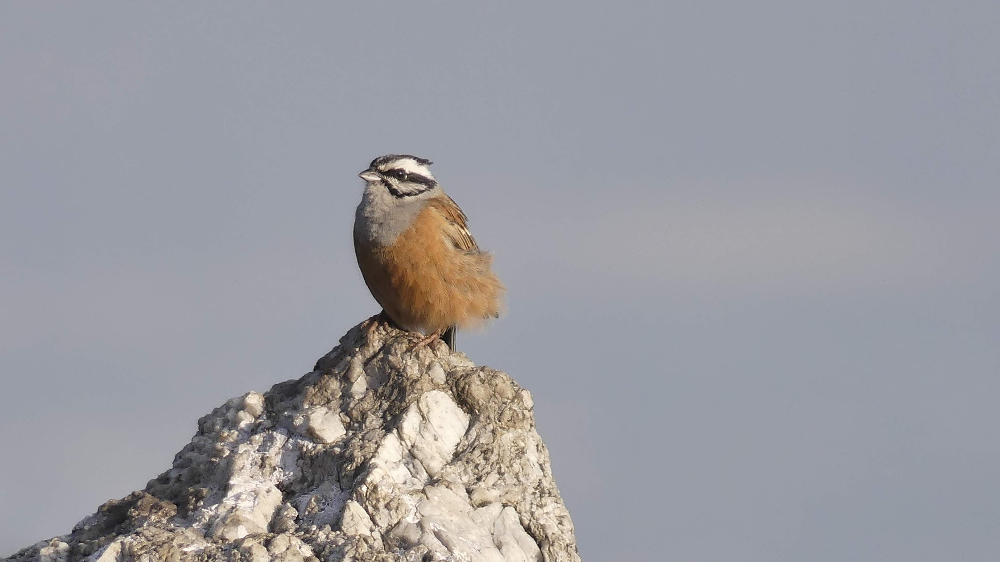
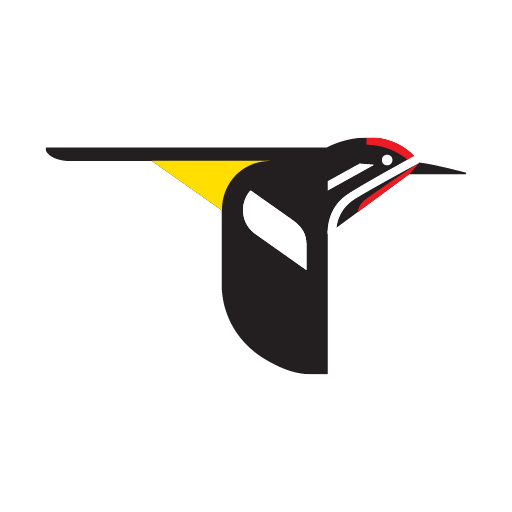
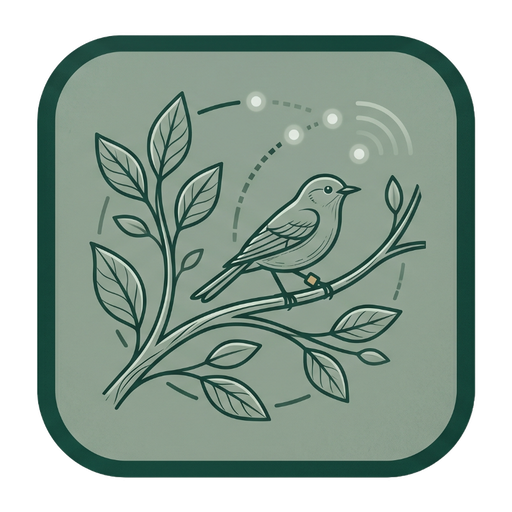
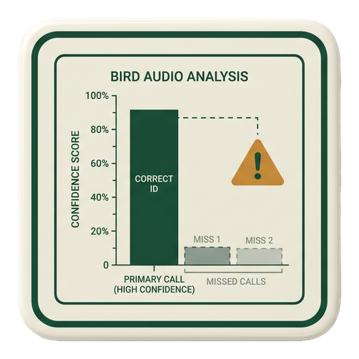
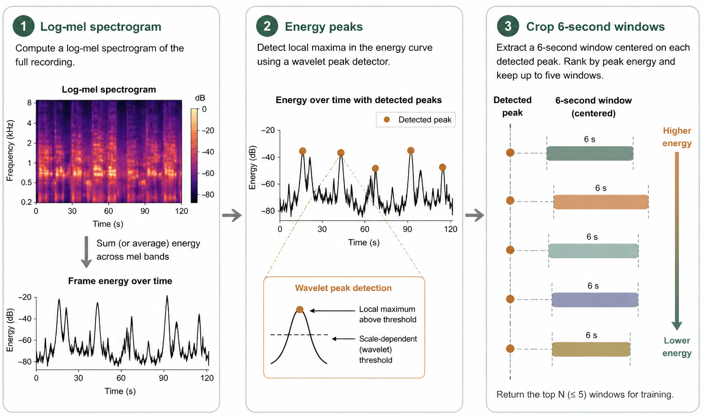
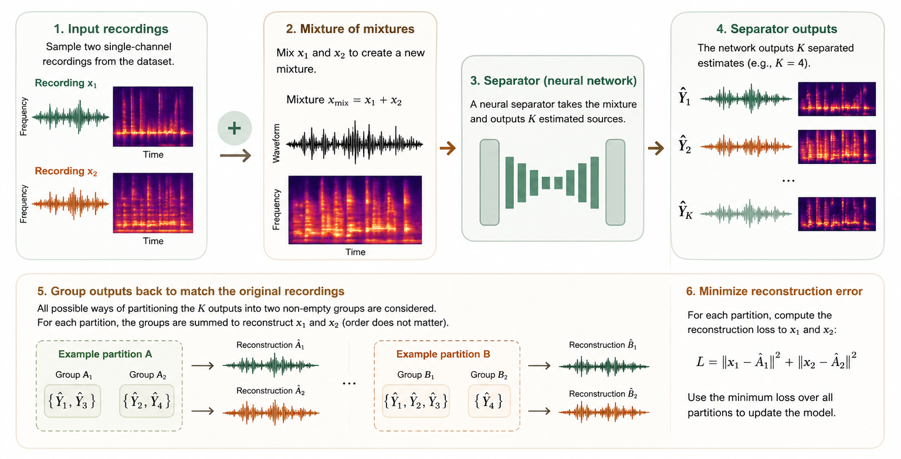
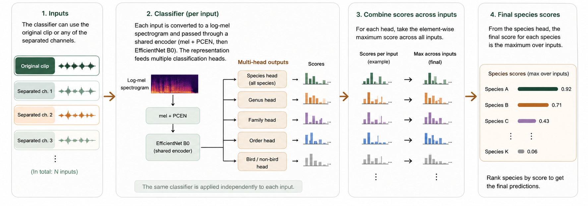

Birding apps can turn a walk into a species list in seconds.

Bird presence and absence reveal habitat quality, biodiversity, and ecosystem stress.

Real recordings contain overlap, wind, insects, and weak labels, so ordinary models miss faint birds.
Before the method, this is the intuition: field recordings are dense, noisy, and hard to separate by ear.
bird-demo.mp4.Pick bird rich 6 second windows from weakly labeled recordings.
Train an unsupervised separator on mixtures of mixtures.
Run the classifier on each separated output and on the original clip.
Use species, genus, family, and order heads to stabilize training.



| Method | CMAP | lwlrap | d′ | Top 1 |
|---|---|---|---|---|
| Sapsucker Woods · SSW · New York | ||||
| Mix only | 0.304 | 0.431 | 1.117 | 0.398 |
| Separation only | 0.268 -11.84% | 0.413 -4.18% | 1.116 -0.09% | 0.360 -9.55% |
| Mix + separation | 0.306 +0.66% | 0.441 +2.32% | 1.123 +0.54% | 0.397 -0.25% |
| Caples Watershed · CAP · Lake Tahoe | ||||
| Mix only | 0.334 | 0.569 | 1.144 | 0.496 |
| Separation only | 0.327 -2.10% | 0.581 +2.11% | 1.154 +0.87% | 0.506 +2.02% |
| Mix + separation | 0.341 +2.10% | 0.590 +3.69% | 1.155 +0.96% | 0.517 +4.23% |
| High Sierras · HSN · Dawn chorus | ||||
| Mix only | 0.527 | 0.531 | 1.149 | 0.432 |
| Separation only | 0.548 +3.98% | 0.548 +3.20% | 1.149 +0.00% | 0.448 +3.70% |
| Mix + separation | 0.560 +6.26% | 0.560 +5.46% | 1.153 +0.35% | 0.451 +4.40% |